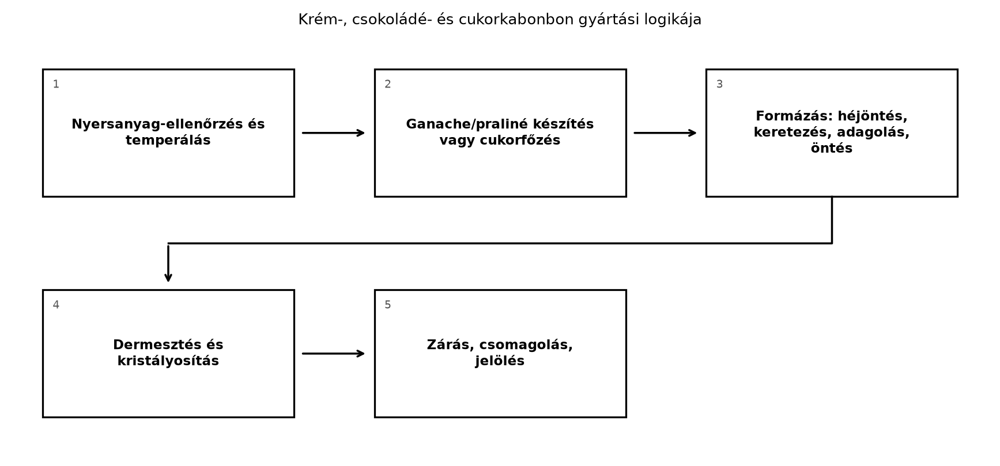

Cukrászüzemi, vizsgamunka vagy kisebb műhelyhelyzet egyaránt: a bonbonkészítés során a legtöbb hiba nem a csokoládé olvasztásakor, hanem a töltelék emulziójának, cukortartalmának vagy vízaktivitásának félreértésénél keletkezik. Ha a ganache kicsapódik, a héj megreped, vagy a bonbon néhány nap alatt virágossá válik, a vendég nem a „kis hibát” látja, hanem a termék csökkent minőségét. Ebben az alfejezetben a krém-, csokoládé- és cukorkabonbonok készítését úgy tanítjuk, hogy a tanuló a töltött, héjas és főzött cukorból formázott bonbonokat higiénikusan, gazdaságosan és stabil végeredménnyel tudja előállítani.
Képzelj el egy bonbonválogatást: az egyik sorban sötét csokoládé héjban megbúvó, fénylőre vágott ganache-kocka; a másikban kakaóvajjal visszafényezett, mandulás gianduja; a harmadikban áttetsző cukorkabonbon, amelynek főzött cukoralapja kemény, de a szájban gyorsan oldódik. Mindhárom termék más elvre épül: a ganache krémbonbon a kakaóvaj, a tejzsír, a cukros vizes fázis és a kakaószemcsék emulziója, illetve diszperziója (stabilitása az arányoktól és a keveréstől függ; ellenőrizendő: szakkönyv), a gianduja zsiradékban diszpergált szilárd szemcsékből áll, a cukorkabonbon túltelített, amorf vagy részben kristályos cukorüveg. A műveletek és az eltarthatóság is ebből következik.

Definíció. A krémbonbon (bonbon fourré; cream/chocolate bonbon) olyan csokoládéba, bevonómasszába vagy cukorhéjba töltött, kisméretű édesipari termék, amelynek tölteléke jellemzően zsíros emulzió (ganache), olajos magvakból készült massza (praliné, gianduja) vagy főzött cukorkrém. Ganache alatt ebben a fejezetben csokoládé és tejszín (vagy más folyadék, vaj, aroma) emulzióját értjük, amely dermedés után szeletelhető, adagolóval tölthető masszává válik.
Definíció. A praliné szűkebb értelemben karamellizált olajos mag (mandula, mogyoró, dió) finomra őrölt, cukorral és kakaóvajjal készült pasztája; tágabb értelemben az ilyen masszával készült töltelék. A gianduja legalább 20–30% olajos magot (leggyakrabban mogyorót) és csokoládét/bevonómasszát tartalmazó, finom hengerléssel készült zsíros massza (ellenőrizendő: pontos megnevezési határok a termékre vonatkozó élelmiszerjogi előírás vagy szakmai gyűjtemény szerint).
Definíció. A cukorkabonbon főzött cukoroldatból vagy cukormasszából készül, lehet öntött, formába fecskendezett, kivágott vagy sajtolt, áttetsző vagy színezett; közös jellemzője, hogy a szacharóz-, glükóz- és egyéb cukrok aránya határozza meg a keménységet, a tapadást és a tárolhatóságot.
Kritikus pont. A krémbonbon-töltelék készítésekor a víztartalomnak és a vízaktivitásnak elég alacsonynak kell lennie ahhoz, hogy a töltelék szobahőmérsékleten stabil maradjon, a penész és az ozmofil élesztő ne szaporodjon benne. A csökkentett vízaktivitást a cukor, a zsír és a megfelelő kivitelezés (forralás, hűtés) biztosítja. A hűtött tárolás akkor szükséges, ha a receptúra víztartalma vagy a nyersanyagok hőkezelése ezt indokolja (pl. tejszínes, tojásos krémbonbonnál). Minden érték ellenőrizendő a hatályos útmutató vagy a HACCP-terv szerint.
A ganache nem egyszerű „csoki + tejszín”. A csokoládéban lévő kakaóvaj (zsírfázis) a tejszín vízfázisával csak akkor alkot stabil emulziót, ha a keverés, a hőmérséklet és az összetétel helyes. A folyamatot a következő lépések szerint tanítsuk:
Technológiai alapok.
Tipikus ok–okozat. Ha a ganache „kicsapódik” (a zsír kiválik, a massza szemcsés lesz), az ok általában a túl sok zsír és kevés folyadék, a túl hideg csokoládé, a túl erős, levegőt bevivő keverés vagy a rossz keverési sorrend. A hibát 30–35 °C-ra melegítve, kevés meleg tejszín vagy csokoládé hozzáadásával, lassú keveréssel gyakran javíthatjuk; ha a massza teljesen szétesett, ne kínáljuk belső hibás termékként, hanem dolgozzuk fel másik termékbe, ahol az emulzió ellenőrzött.
A praliné és a gianduja készítése finom szemcsés, zsírban gazdag masszát eredményez. A művelet a következő:
Higiénia. A pirított magvak és a hosszú keverési idő miatt a nyersanyagok tisztasága, a gépek tisztántartása és az allergének keresztszennyeződésének elkerülése elsődleges. A diófélék közé sorolt mandula, mogyoró, dió; a földimogyoró külön allergéncsoport. A közös eszközök használatakor mindig jelöljük az allergén keresztszennyeződést.
A csokoládébonbon készítésének alaplépései:
Biztonsági korlát. A csokoládé melegítése vízfürdőben vagy speciális temperálóberendezésben, oktatás után, felügyelet mellett végezhető. A víz a csokoládéba kerülve tönkreteszi a temperálást; soha ne engedjük, hogy a víz a csokoládéval érintkezzen. Az edény forró lehet, kesztyűvel fogjuk; a konyharuhával való emelés fennakadhat, és eldőlhet.
A főzött cukorból készült cukorkabonbon a cukorkészítés egyik legegyszerűbb, mégis sok hibát rejtő formája. A művelet:
Figyelem. A forró cukor 150 °C fölött súlyos égési sérülést okoz; a cukorfőzés mindig hosszú ujjú, hőálló védőfelszerelésben, fém-üveg eszközökkel történjen; vizet a forró cukorba soha ne öntsünk, mert a hirtelen gőz kicsaphatja a masszát. A cukorfőzéshez hőálló szilikon kesztyű, fatál vagy fém eszköz szükséges; a műanyag eszköz megolvad.
A bonbonkészítés utolsó szakasza a kiszállításig tartó higiénikus, dokumentált kezelés. A bonbonokat hűvös (14–18 °C), száraz, szagmentes helyen tároljuk (ellenőrizendő: a hatályos gyakorlat és a termékre vonatkozó előírás szerint). A csokoládébonbonok ne álljanak közvetlen fényben vagy illatos élelmiszerek közelében. A páratartalom 60% alatt maradjon; a pára vízaktivitást emel, a cukorkabonbon felületét ragacsossá, a csokoládét virágossá teszi.
Csomagolás. A bonbonokat sűrűn, minipapírban, papír- vagy fémfólia-tálcában, lehetőleg párazáró, élelmiszerrel érintkezésre alkalmas anyagban szállítsuk. A nem ehető díszeket (pálca, szalag, műanyag virág) jelölni kell, és csak élelmiszerrel érintkezésre alkalmas anyagból származhatnak.
Jelölés. A készterméken fel kell tüntetni a termék nevét, az összetevőket, a nettó tömeget, a csomagolt terméknél az eltarthatósági időt, a tárolási körülményeket, a gyártó/forgalmazó nevét és címét, a tételszámot vagy a nyomon követhetőségi jelölést. Az allergéneket a 14 jelölendő allergéncsoport szerint kiemelten kell megadni (pl. glutén, tojás, tej, diófélék, földimogyoró, szója, szezám). A „gluténmentes”, „laktózmentes” állítás csak a feltételek teljesülése esetén és megfelelő jelöléssel használható. Az alkoholos bonbonoknál az alkoholtartalmat és a gyermekeknek való alkalmatlanságot jelezni kell (ellenőrizendő: a fogyasztói tájékoztatásról szóló rendelet szerinti pontos követelmények).
Cél. A tanuló készítsen el legalább kétféle bonbont: egy öntött héjas étcsokoládé bonbont ganache töltelékkel, és egy egyszerű színezett cukorkabonbont. A gyakorlat során gyakorolja a temperálást, az emulziókészítést, a zárást és a higiénikus csomagolást.
Eszközök és anyagok. Digitális hőmérő, cukor- és csokoládé-olvasztó eszköz, bonbonforma (egyszeres, vékony héjú), bonbonnal tölthető adagoló, műanyag vagy fém keret, szilikonlap, csillagos kivágó vagy bonbonvágó, párazáró csomagolóanyag. Alapanyagok: étcsokoládé (60–70% kakaótartalom), tejszín (30% zsír), glükózszirup, szacharóz, citromsav (opcionális), aroma, színezék.
Termék neve, termékcsoport, alapmennyiség: Öntött héjas étcsokoládé bonbon ganache töltelékkel; csokoládébonbon; alapmennyiség 24 db (1 bonbonforma), kb. 12–15 g/db, kb. 290–360 g kész bonbon.
Anyaghányad táblázat:
| Nyersanyag | Mennyiség (g) | Megjegyzés |
|---|---|---|
| Étcsokoládé 60% (héj + zárás) | 250 | temperálásra alkalmas; a bonbonokra kb. 4–5 g/db kerül, a maradék visszaolvasztható |
| Tejszín 30% zsírtartalom | 75 | forralásig melegítve |
| Glükózszirup (technológiai) | 15 | 80% körüli szárazanyag-tartalom |
| Invertcukor (opcionális, nagy vízmegkötéshez) | 10 | helyettesíthető 5 g glükózzal |
| Étcsokoládé, apróra vágott | 125 | a ganache-hoz |
| Aroma (pl. rum, narancs) | 1 | jelölve, alkalmasnak kell lennie |
| Összesen | 476 | a teljes felhasznált nyersanyag; a temperált csokoládé maradéka visszanyerhető |
Eszközök és gépek: temperáló vagy vízfürdő, hőmérő, bonbonforma, spatula, lehúzó penge, adagoló, hűtőszekrény.
Műveleti sorrend:
Higiéniai munkakezdés. Tiszta munkaruha, hajháló, kézmosás. A formát papírtörlővel megtisztítjuk, és kb. 20–24 °C-ra temperáljuk (nem hűtjük előre).
Temperálás. Az étcsokoládét a temperálás alfejezet szerint 45–50 °C-ról 27–28 °C-ra hűtjük, majd 31–32 °C-ra visszamelegítjük (ellenőrizendő: gyártói adatlap szerinti pontos hőfok).
Héj öntése. A temperált csokoládét a formába töltjük, a felesleget lehúzzuk; a formát fejjel lefelé, buborékok kiverve dermesztjük.
Első dermedés. 12–14 °C-on, 5–10 perc (ellenőrizendő: a forma és a csokoládé hőmérséklete szerint).
Ganache készítése. A tejszínt és a glükózt 85–90 °C-ra melegítjük (hőkezelés), majd az aprított csokoládéra öntjük; 1–2 perc állás után középen kezdve, lassú, keverő mozdulatokkal emulgeáljuk; 28–30 °C-on adagoljuk.
Töltés. A ganache-t a héjba adagoljuk, de a felső perem alatt 1–2 mm-t hagyunk; 10 percre hűtőbe tesszük.
Zárás. A megmaradt temperált csokoládét a formára öntjük, elhúzzuk, a felesleget lehúzzuk; 12–14 °C-on dermesztjük.
Kiformázás, csomagolás. A bonbonokat kifordítjuk, szükség esetén papírral elhelyezzük; azonnal csomagoljuk, jelöljük.
Kritikus pontok: a ganache hőmérséklete a töltéskor nem haladhatja meg a 30 °C-ot, különben a héj megolvad; a héj és a záróréteg hőmérséklete ne különbözzön 2–3 °C-nál jobban; a tárolás hűvös, száraz, fénytől védett legyen.
Allergének: tej (tejszín, csokoládé); szója (lecitin a csokoládéban, ha van); glutén és diófélék/földimogyoró: keresztszennyeződés a gyártási környezettől függően (a „gluténmentes” állítás ellenőrzés és a szabályozási feltételek nélkül nem használható); rum aroma esetén az alkoholtartalmat jelölni kell, gyermekeknek szánt termékbe nem való (ellenőrizendő).
Minőségi jellemzők: fényes, vékony, egyenletes héj; a metszet tömör, a ganache selymes; a héj nem fehér, nem repedt; a bonbon alakja formához illeszkedik; a tömeg egységes (12–15 g/db, jelölve).
Tárolás, eltarthatóság: 14–18 °C, száraz, fényvédett helyen (ellenőrizendő: a HACCP-terv szerint); a frissen készült ganache-s bonbon 2–4 hétig eltartható, de az érzékszervi csúcs az első 1–2 hétben van; a cukorkabonbon 1–3 hónapig, ha párazáró csomagolásban, hűvös helyen tároljuk.
A bonbonok minőségét érzékszervi és tömegellenőrzéssel végezzük. A héjnak fényesnek, vékony falúnak, nyomásra roppanónak kell lennie; a tölteléknek egyneműnek, olvadékony ízűnek, a metszetnek tömörnek, de nem ragacsosnak kell lennie. A cukorkabonbon legyen áttetsző vagy a színe egységes, a felülete sima, nem nedves, nem nyúlós. A tömegmérést minden tálcán végezzük el; a nettó tömeg nem lehet kevesebb a jelöltnél, a statisztikai gyakorlat szerint az átlagnak legalább a jelölt tömeget kell elérnie (ellenőrizendő: a mérésügyi és fogyasztóvédelmi szabályok szerint).
Egy kisüzemi cukrászműhelyben esküvői bonbonválogatáshoz készül 120 db háromrészes válogatás: 40 db étcsokoládé ganache, 40 db mogyorós gianduja, 40 db citromos cukorkabonbon. A gyártási napon a hűtőtér hőmérséklete reggel 12 °C, a csokoládé temperálása 31 °C-on sikerül. A ganache készítésekor a cukrász a tejszínt csak 60 °C-ra melegíti, mert siet, és a hideg csokoládét gyors keveréssel dolgozza el; a csokoládéból kiválik a kakaóvaj, a massza fénytelen, szemcsés lesz. A hibát a következőképp javítja: az egész masszát 34 °C-ra melegíti, hozzáad 10 g meleg tejszínt, nagyon lassan keveri, majd hűtőbe teszi 20 percre; az állaga javul, de nem lesz olyan selymes, mint a hibátlan emulzióé. A tételből végül 40 db helyett 30 db készül, mert a kimaradt masszát másik munkafázisban (pohárkrém-alap) használják fel. A cukorkabonbonokat azonnal párazáró fóliába csomagolják, a jelölés napján felkerül a tételszám, és a tárolási hőmérsékletet a hűtőnaplóban rögzítik. A valós tanulság: a sietségből fakadó hőlépcső-kihagyás anyag- és időveszteséget, valamint minőségi kockázatot okozott.
1. feladat (A): Magyarázd el röviden, mi a különbség a ganache, a praliné és a gianduja töltelék között. Adj legalább két jellemző példát mindegyikre.
2. feladat (A): Számítsd ki a 2:1 arányú étcsokoládés ganache anyaghányadát 500 g kész masszára, ha a csokoládé kakaótartalma 60%, a veszteség 5%. Add meg a csokoládé és a tejszín bruttó mennyiségét.
3. feladat (B): Egy műhely 350 g temperált étcsokoládét készít elő 24 db bonbonhéjhoz és záráshoz. A ganache 120 g; a kész bonbonok nettó tömege 15 g/db, így a kész tömeg 24 · 15 = 360 g. Mennyi a teljes anyagfelhasználás és a látszólagos veszteség, ha a bonbonforma 24 db-ot tartalmaz? Írd fel a képletet, és elemezd, hol keletkezett a veszteség.
4. feladat (B): Írd le a csokoládébonbon öntött héjának készítését 6 lépésben. Minden lépéshez adj a) egy technológiai célt, b) a hőtartományt, ahol fontos (ellenőrizendő: temperálás, dermedés).
5. feladat (C): Egy bonbonüzemben a ganache-t 10 °C-os hűtőből kivett, nagy darabokban hagyott csokoládéra öntik 60 °C-os tejszínnel, majd gyors botmixerrel keverik. Mi történik? Sorold fel a hibákat, a következményeket, és javasold a helyes műveletsort.
6. feladat (D): Készíts technológiai lapot egy mogyorós gianduja-bonbonhoz 30 db-ra. Az anyaghányad: 150 g mogyoró, 100 g bevonómassza, 20 g kakaóvaj. Add meg a lépéseket, a kritikus pontokat, az allergéneket és a tárolási javaslatot.
1. feladat (A): A ganache csokoládé (kakaóvaj és kakaómassza) és tejszín (víz) stabil emulziója; pl. étcsokoládés ganache, kávés ganache. A praliné karamellizált, pirított olajos magvakból (mandula, mogyoró) készült finom massza; pl. mandulás praliné, mogyorós praliné. A gianduja olajos magot és csokoládét/bevonómasszát tartalmazó, zsíros, sima massza; pl. mogyorós gianduja, mandulás gianduja. A lényeg: a ganache emulzió, a praliné és a gianduja zsíros diszperzió.
2. feladat (A): A 2:1 arány étcsokoládé:tejszín. A kész massza 500 g, a veszteség 5%, így a bruttó szükséglet: 500 / (1 − 0,05) = 526,32 g. A csokoládé: 526,32 × 2/3 = 350,88 g; a tejszín: 526,32 × 1/3 = 175,44 g. Ellenőrzés: 350,88 + 175,44 = 526,32 g. Gyakorlatilag: 351 g csokoládé, 175 g tejszín.
3. feladat (B): Teljes anyagfelhasználás = 350 g (héj+zárás) + 120 g ganache = 470 g. A kész termék napi mennyisége 24 × 15 = 360 g. A különbség: 470 − 360 = 110 g, a látszólagos veszteség aránya 110 / 470 = 0,234 (23,4 %). Ennek jelentős része nem valódi veszteség: a lehúzott temperált csokoládé felesleg visszagyűjthető, visszamelegíthető és újra temperálható. A valódi veszteség csak az a rész, ami a spatulán, az edényen és a formán marad; ezt a visszaolvasztott felesleg lemérésével kell meghatározni. A számításnál mindig külön kell kezelni a visszanyerhető csokoládét és a valódi veszteséget.
4. feladat (B): A választ a tanuló a technológiai lap alapján fogalmazza. Példa: 1) a formát előhűtés; 2) temperált csokoládé betöltése; 3) lehúzás, buborékok kiverése; 4) dermedés 12–14 °C-on; 5) töltés 28–30 °C-os masszával; 6) zárás temperált csokoládéval, dermesztés. Minden lépéshez a diák írja be a hőmérsékleti tartományt és az indokot (pl. a temperálás miatt a kakaóvaj stabil kristályformában van; a dermedés alatt a szerkezet megszilárdul).
5. feladat (C): Hideg csokoládé + túl hűvös tejszín + gyors keverés: a csokoládé nem olvad el egyenletesen, a kakaóvaj kiválik, a víz külön fázist alkot; a botmixer levegőt visz be, és tovább roncsolja az emulziót; a massza szemcsés, zsírszemcsékkel. Következmény: virágos, fénytelen, széteső krém; a héjba töltve a termék folyik, a héj megreped, a látszat romlik. Helyes sorrend: a tejszínt 85–90 °C-ra melegítjük (hőkezelés), az aprított csokoládéra öntjük, 1–2 perc állás után közepétől kifelé, lassan keverjük; a ganache-t 28–30 °C-on töltjük.
6. feladat (D): A tanuló készítsen saját táblázatot, de a megoldásban szerepelnek a lépések: magvak előválogatása, pirítás 160 °C-on, hűtés, aprítás finomra, kakaóvaj hozzáadása, 28 °C-ra temperálni, formába tölteni, hűteni. Kritikus pontok: a magvak pirítása során a hő, a nedvesség és az illat keresztszennyeződése; az allergének: diófélék (mogyoró), tej (bevonómassza), szója (lecitin); a tárolási javaslat: 15–18 °C, száraz, fényvédett, csomagolva, jelölve.
A krémbonbonok töltelékei közé tartozó ganache csokoládé és tejszín 2:1–3:1 arányú, ellenőrzött hőmérsékletű emulziója; az invertcukor és a glükóz csökkenti a vízaktivitást, javítja a krémességet és a stabilitást. A praliné és a gianduja pirított, finomra őrölt olajos magvak és csokoládé/kakaóvaj zsíros diszperziója; ezeket hűtve, adagolva formázzuk. Az öntött héjas csokoládébonbon a temperált csokoládé héját, a 28–30 °C-os tölteléket, valamint a záróréteget igényli; a hőlépcsők betartása a fényes, roppanó héj alapja. A cukorkabonbon főzött cukormasszából készül, 155–160 °C-on (ellenőrizendő), a savat csak a legvégén adjuk. A bonbonokat 14–18 °C-on, száraz, fényvédett helyen, párazáró, élelmiszerrel érintkezésre alkalmas csomagolásban kell tárolni; a jelölésnél az allergéneket kiemelten kell feltüntetni. Továbbvitt eredmény: a tanult műveletek és elvek a A szakmai vizsga felépítése és a gyakorlati vizsgafeladat tervezése és a gyakorlati munka során alkalmazandó bonbontechnológia alapját adják.
Hivatkozott kör: a Fondán melegítése, hígítása és felhasználása bevonásra, a A csokoládé temperálása: kristályszerkezet és temperálási görbe, a Bevonómassza, zselék, áthúzó ganache és tükörbevonó alfejezetek; a Magyar Élelmiszerkönyv és a csokoládétermékekre vonatkozó 2000/36/EK irányelv (ellenőrizendő: összetételi határok); a fogyasztói tájékoztatásról szóló 1169/2011/EU rendelet (ellenőrizendő: allergének, alkohol, nettó tömeg); a csomagolóanyagokra vonatkozó 1935/2004/EK rendelet; a bonbonok tárolási és eltarthatósági adatai (ellenőrizendő: üzemi HACCP, gyártói adatlap); a cukorfőzési hőfok és a glükózarány a receptúra függvényében (ellenőrizendő: gyártói és szakirodalmi forrás); a munkavédelmi és tűzvédelmi előírások (1993. évi XCIII. törvény és végrehajtási szabályai, ellenőrizendő: aktuális). A forráslista fájljai kiindulópontok, önmagukban nem ellenőrzött adatok.